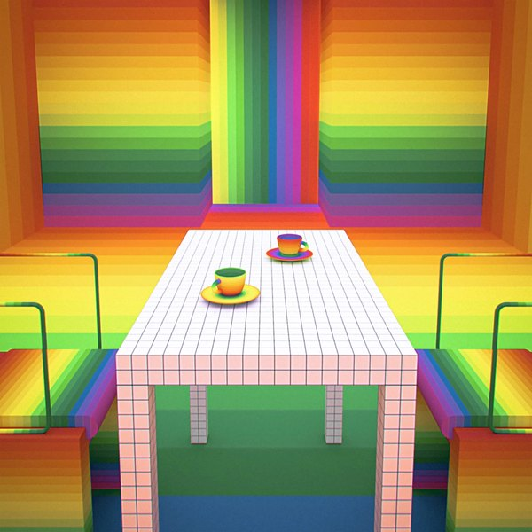

CRVI003344Superstudio - Untitled

CRVI003335Superstudio - Untitled

CRVI001444Joseph Maria Olbrich - Entwürfe zu Arbeiterhäusern
Plate from Architektur von Olbrich
Plate from Architektur von Olbrich

CRVI003354Archigram - Untitled

CRVI001767Unknown - Parametric model after Itten's Tower of Fire

CRVI001445Joseph Maria Olbrich - Das Haus Olbrich, Darmstadt
Postcard · Darmstadt artists' colony · 1901
Postcard · Darmstadt artists' colony · 1901

CRVI001616Charles Rennie Mackintosh - Décor de la salle à manger, House for an Art Lover, Glasgow
1901
1901

CRVI003339Superstudio - Untitled

CRVI003337Superstudio - Untitled

CRVI001447Unknown - Architectural rendering of a Secession-style building

CRVI003334Superstudio - Untitled

CRVI003346Superstudio - Untitled

CRVI002841Unknown - Le Corbusier

CRVI000847domus - domus 1112
May 2026 · 2026
May 2026 · 2026

CRVI000843domus - domus 1109
February 2026 · 2026
February 2026 · 2026

CRVI003350Superstudio - Untitled

CRVI003269Superstudio - Quaderna console table
1970
1970

CRVI001750Unknown - Interior of the Kandinsky/Klee Master House, Dessau

CRVI001749Unknown - Axonometric of a modernist house

CRVI003270Archigram - Archigram: The Magazine — facsimile edition, cover

CRVI003355Archigram - Untitled

CRVI003351Superstudio - Untitled

CRVI001753Unknown - The Bauhaus building, Dessau

CRVI000844domus - domus 690
gennaio 1988 · 1988
gennaio 1988 · 1988

CRVI000845domus - domus 1111
April 2026 · 2026
April 2026 · 2026

CRVI003277Archigram - Archigram magazine — spread

CRVI000846domus - domus 1114
July–August 2026 · 2026
July–August 2026 · 2026

CRVI001752Walter Gropius - Bauhaus Master Houses, Dessau: isometric site plan
1925–1926
1925–1926

CRVI003347Superstudio - Untitled

CRVI003349Superstudio - Untitled

CRVI003352Superstudio - Untitled

CRVI003340Superstudio - Untitled

CRVI003341Superstudio - Untitled

CRVI003338Superstudio - Untitled

CRVI003343Superstudio - Untitled

CRVI003333Superstudio - Untitled

CRVI003345Superstudio - Untitled

CRVI003348Superstudio - Untitled

CRVI003275Ron Herron - Walking City on the Ocean, project (Exterior perspective)
1966
1966

CRVI003353Archigram - Untitled

CRVI001949Unknown - Chandelier, Copenhagen Opera House

CRVI003342Superstudio - Untitled

CRVI003336Superstudio - Untitled

CRVI003278Archigram - Archigram magazine — spread